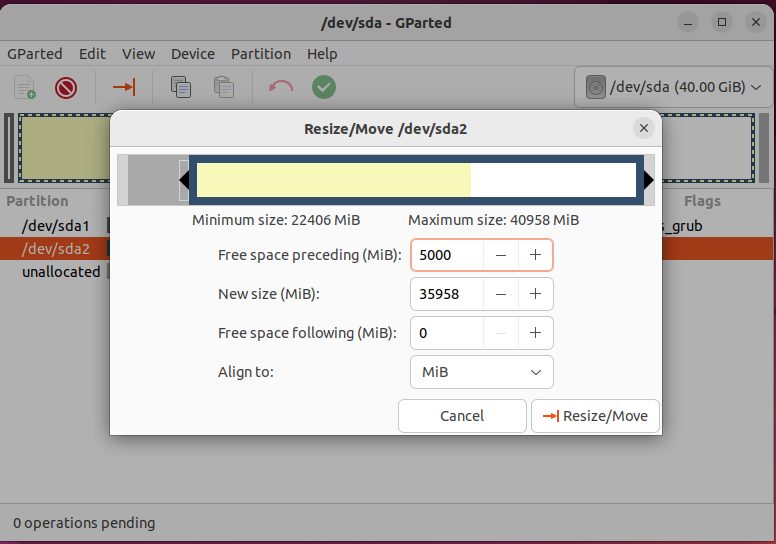
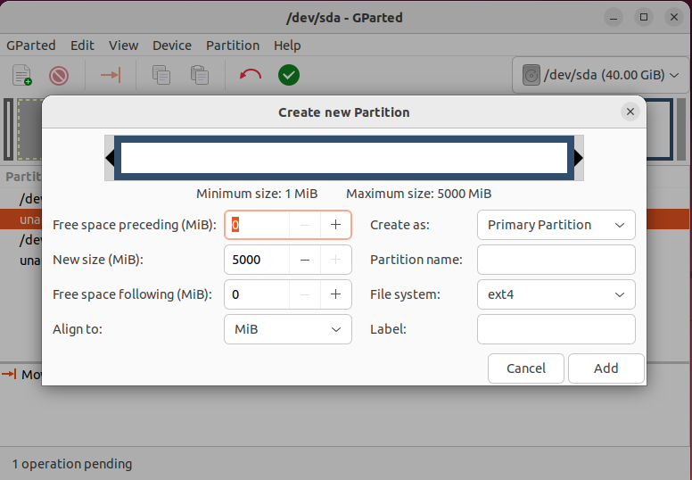
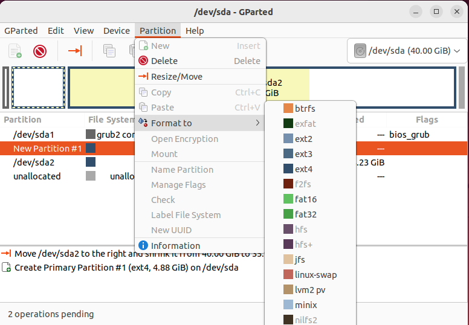
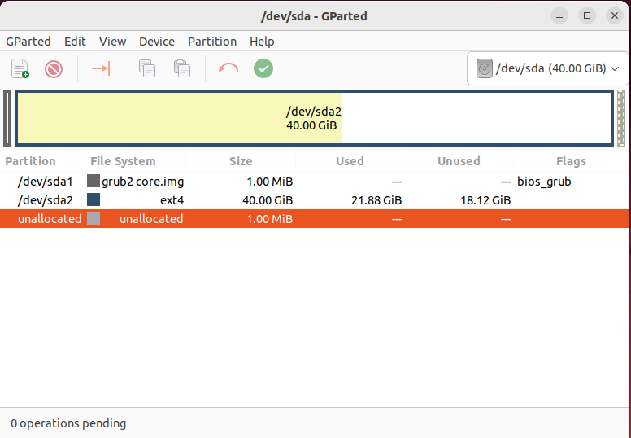

GParted, или GNOME Partition Editor, представляет собой свободное программное обеспечение, разрабатываемое сообществом открытого программного обеспечения и являющееся частью проекта GNOME. Основная цель GParted - предоставление графического интерфейса для управления разделами на жестких дисках.
Ссылка на сайт прозводителя: ссылка
GParted - это мощный графический инструмент для управления разделами и дисками в операционных системах, таких как Linux. Вот некоторые общие возможности программы GParted:
Мультиплатформенность - Поддерживает не только Linux, но и может использоваться на других операционных системах, таких как Windows и macOS.
Управление метками разделов - Позволяет присваивать и изменять метки разделов для лучшей идентификации и организации дискового пространства.
Поддержка клонирования дисков - GParted предоставляет возможность клонирования одного диска на другой, что полезно при замене жесткого диска или переносе данных на другой носитель.
Поддержка операций с GPT и MBR - Работает с различными типами таблиц разделов, включая GUID Partition Table (GPT) и Master Boot Record (MBR).
Предварительный просмотр операций - Дает пользователю возможность просмотреть изменения перед их применением, что способствует избежанию ошибок.
Подробная информация о разделах - Предоставляет детализированную информацию о каждом разделе, включая используемое пространство и свойства файловой системы.
Гибкая конфигурация - Пользователи могут настраивать параметры операций с разделами, обеспечивая гибкость и контроль над процессом.
Обновление файловой системы - GParted позволяет обновлять файловые системы до их последних версий, что может быть важно для улучшения производительности и безопасности.
Изменение размера раздела диска
Создание нового раздела
Форматирование диска
Удаление раздела
Копирование и вставка раздела
Возможность откатить все изменения в случае неудачи
GParted (GNOME Partition Editor) представляет собой мощное средство для управления разделами диска на системах Linux. Программа, являющаяся частью проекта GNOME, обладает широким спектром функциональности, делая ее ценным инструментом как для домашних, так и для корпоративных пользователей.
Для домашних пользователей GParted предлагает возможности создания резервных копий и расширения разделов, обеспечивая удобное управление дисками. Системные администраторы в корпоративной среде могут использовать GParted для управления серверами, оптимизации ресурсов и предварительной настройки разделов при развёртывании образов на множестве компьютеров. Интуитивный интерфейс и богатый набор инструментов делают GParted полезным инструментом для разнообразных задач по управлению дисками.
Плюсы:
Минусы: